Charlotte Brontë’s romantic gothic novel, featuring one of
literature’s most memorable heroines.
With her 1847 novel, Jane Eyre, Charlotte Brontë created one of the
most unforgettable heroines of all time. Jane Eyre is an orphan,
penniless and plain, but full of courage and spirit. She has endured
incredible hardship to secure her humble status as a governess in the
household of her brooding employer, Mr. Rochester. Jane’s sharp wit
and defiant nature meet with Rochester’s sardonic temperament. The two
become enmeshed in a deep, intense bond. But Rochester has a terrible
secret—a remnant from his past that could threaten any hope of
happiness with his only love.
An unconventional love story that broadened the scope of romantic
fiction, Jane Eyre is ultimately the tale of one woman’s fight to
claim her independence and self-respect in a society that has no place
for her.
Jane Eyre calls into question most of society's major institutions,
including education, family, social class, and Christianity. The novel
asks the reader to consider a variety of contemporary social and
political issues: What is women's position in society, what is the
relation between Britain and its colonies, how important is artistic
endeavor in human life, what is the relationship of dreams and fantasy
to reality, and what is the basis of an effective marriage? Although
the novel poses all of these questions, it doesn't didactically offer
a single answer to any of them. Readers can construct their own
answers, based on their unique and personal analyses of the book. This
multidimensionality makes Jane Eyre a novel that rewards multiple
readings.
Characters
Jane Eyre
The orphaned protagonist of the story. When the novel begins, she is
an isolated, powerless ten-year-old living with an aunt and cousins
who dislike her. As the novel progresses, she grows in strength. She
distinguishes herself at Lowood School because of her hard work and
strong intellectual abilities. As a governess at Thornfield, she
learns of the pleasures and pains of love through her relationship
with Edward Rochester. After being deceived by him, she goes to
Marsh End, where she regains her spiritual focus and discovers her
own strength when she rejects St. John River's marriage proposal. By
novel's end she has become a powerful, independent woman, blissfully
married to the man she loves, Rochester.
Edward Rochester
Jane's lover; a dark, passionate, brooding man. A traditional
romantic hero, Rochester has lived a troubled wife. Married to an
insane Creole woman, Bertha Mason, Rochester sought solace for
several years in the arms of mistresses. Finally, he seeks to purify
his life and wants Jane Eyre, the innocent governess he has hired to
teach his foster daughter, Adèle Varens, to become his wife. The
wedding falls through when she learns of the existence of his wife.
As penance for his transgressions, he is punished by the loss of an
eye and a hand when Bertha sets fire to Thornfield. He finally gains
happiness at the novel's end when he is reunited with Jane.
St. John Rivers
Jane's cousin, St. John is a cold, despotic, excessively zealous.
Unhappy with his humble position as the minister at Morton, St. John
wants to become a missionary in order to meet his ambitions for
power and glory. St. John tries to force Jane to marry him and move
to India. Jane resists him, and he spends the rest of his life
furthering British colonialism by forcing Christian values on the
natives.
Plot
The novel goes through five distinct stages:
1. Jane’s childhood at Gateshead, where she is abused by her aunt and
cousins.
2. Her education at Lowood School, where she acquires friends and role
models but also suffers privations.
3. Her time as governess Thornfield Manor, where she falls in love
with her Byronic employer, Edward Rochester.
4. Her time with the Rivers family at Marsh’s End and at Morton, where
her cold clergyman - cousin St. John Rivers proposes to her.
5. Her reunion with and marriage to her beloved Rochester at his house
in Ferndean.
Jane Eyre is a young orphan being raised by Mrs. Reed, her cruel,
wealthy aunt. A servant named Bessie provides Jane with some of the
few kindnesses she receives, telling her stories and singing songs
to her. One day, as punishment for fighting with her bullying cousin
John Reed, Jane’s aunt imprisons Jane in the red-room, the room in
which Jane’s Uncle Reed died. While locked in, Jane, believing that
she sees her uncle’s ghost, screams and faints. She wakes to find
herself in the care of Bessie and the kindly apothecary Mr. Lloyd,
who suggests to Mrs. Reed that Jane be sent away to school. To
Jane’s delight, Mrs. Reed concurs.
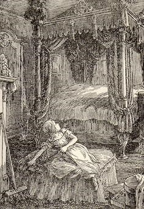
Once at the Lowood School, Jane finds that her life is far from
idyllic. The school’s headmaster is Mr. Brocklehurst, a cruel,
hypocritical, and abusive man. Brocklehurst preaches a doctrine of
poverty and privation to his students while using the school’s funds
to provide a wealthy and opulent lifestyle for his own family. At
Lowood, Jane befriends a young girl named Helen Burns, whose strong,
martyr like attitude toward the school’s miseries is both helpful
and displeasing to Jane.
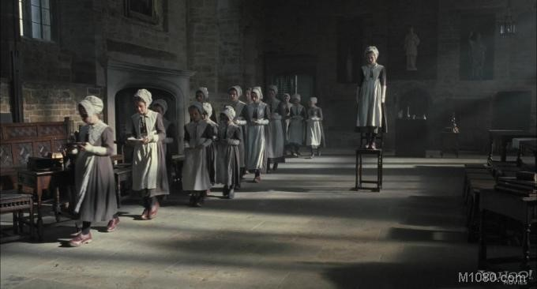
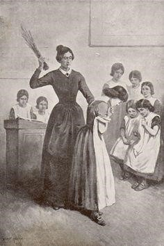
A massive typhus epidemic sweeps Lowood, and Helen dies of
consumption. The epidemic also results in the departure of Mr.
Brocklehurst by attracting attention to the insalubrious conditions
at Lowood. After a group of more sympathetic gentlemen takes
Brocklehurst’s place, Jane’s life improves dramatically. She spends
eight more years at Lowood, six as a student and two as a teacher.
After teaching for two years, Jane yearns for new experiences. She
accepts a governess position at a manor called Thornfield, where she
teaches a lively French girl named Adèle. The distinguished
housekeeper Mrs. Fairfax presides over the estate. Jane’s employer
at Thornfield is a dark, impassioned man named Rochester, with whom
Jane finds herself falling secretly in love. She saves Rochester
from a fire one night, which he claims was started by a drunken
servant named Grace Poole. But because Grace Poole continues to work
at Thornfield, Jane concludes that she has not been told the entire
story.
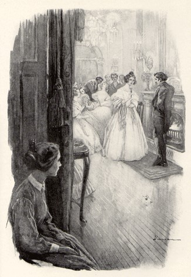
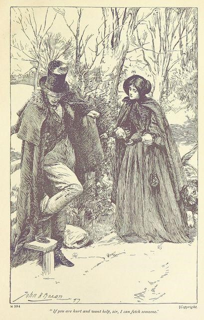
Jane sinks into despondency when Rochester brings home a beautiful
but vicious woman named Blanche Ingram. Jane expects Rochester to
propose to Blanche. But Rochester instead proposes to Jane, who
accepts almost disbelievingly. The wedding day arrives, and as Jane
and Mr. Rochester prepare to exchange their vows, the voice of Mr.
Mason cries out that Rochester already has a wife. Mason introduces
himself as the brother of that wife—a woman named Bertha. Mr. Mason
testifies that Bertha, whom Rochester married when he was a young
man in Jamaica, is still alive. Rochester does not deny Mason’s
claims, but he explains that Bertha has gone mad. He takes the
wedding party back to Thornfield, where they witness the insane
Bertha Mason scurrying around on all fours and growling like an
animal. Rochester keeps Bertha hidden on the third story of
Thornfield and pays Grace Poole to keep his wife under control.
Bertha was the real cause of the mysterious fire earlier in the
story. Knowing that it is impossible for her to be with Rochester,
Jane flees Thornfield.
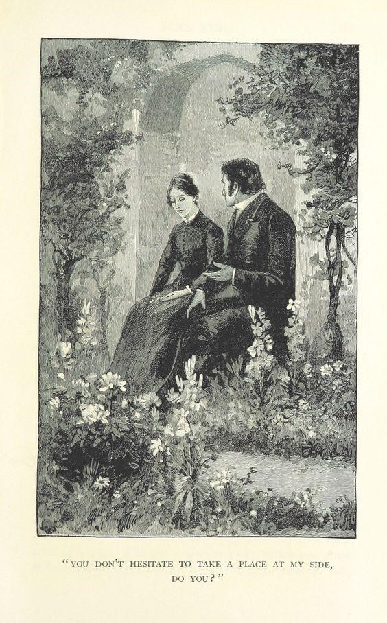
Penniless and hungry, Jane is forced to sleep outdoors and beg for
food. At last, three siblings who live in a manor alternatively
called Marsh End and Moor House take her in. Their names are Mary,
Diana, and St. John (pronounced “Sinjin”) Rivers, and Jane quickly
becomes friends with them. St. John is a clergyman, and he finds
Jane a job teaching at a charity school in Morton. He surprises her
one day by declaring that her uncle, John Eyre, has died and left
her a large fortune: 20,000 pounds. When Jane asks how he received
this news, he shocks her further by declaring that her uncle was
also his uncle: Jane and the Riverses are cousins. Jane immediately
decides to share her inheritance equally with her three newfound
relatives.
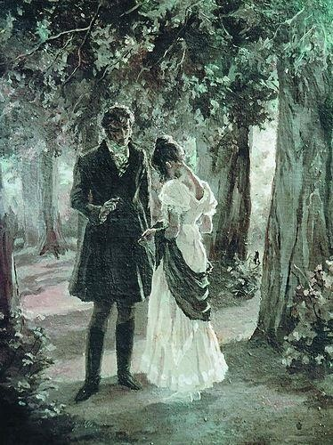
St. John decides to travel to India as a missionary, and he urges
Jane to accompany him—as his wife. Jane agrees to go to India but
refuses to marry her cousin because she does not love him. St. John
pressures her to reconsider, and she nearly gives in. However, she
realizes that she cannot abandon forever the man she truly loves
when one night she hears Rochester’s voice calling her name over the
moors. Jane immediately hurries back to Thornfield and finds that it
has been burned to the ground by Bertha Mason, who lost her life in
the fire. Rochester saved the servants but lost his eyesight and one
of his hands. Jane travels on to Rochester’s new residence,
Ferndean, where he lives with two servants named John and Mary.
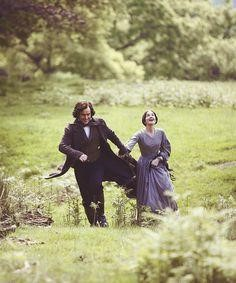
At Ferndean, Rochester and Jane rebuild their relationship and soon
marry. At the end of her story, Jane writes that she has been
married for ten blissful years and that she and Rochester enjoy
perfect equality in their life together. She says that after two
years of blindness, Rochester regained sight in one eye and was able
to behold their first son at his birth.
The Author: Charlotte Bronte
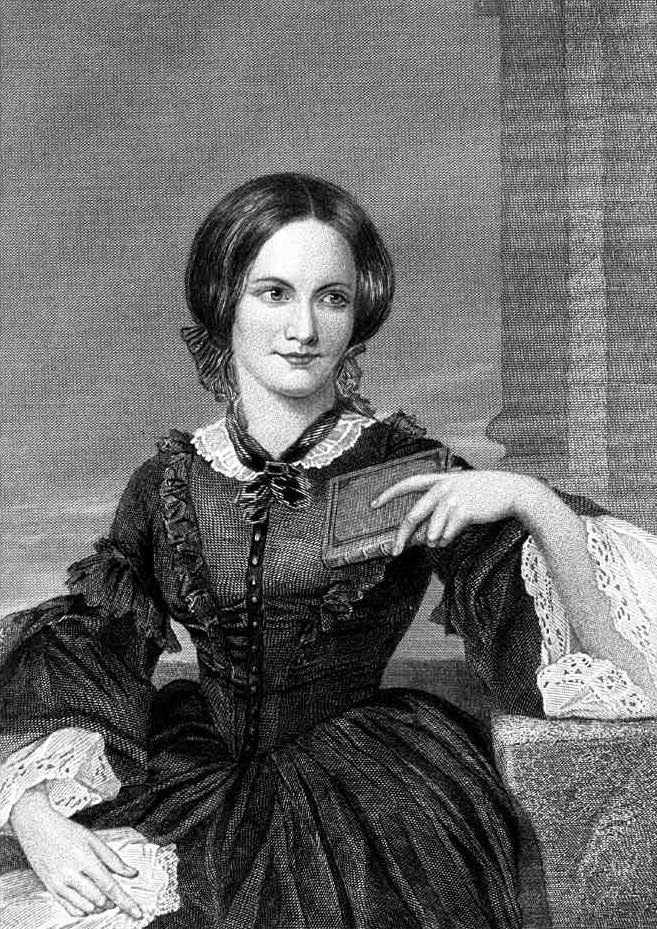
Born: April 21, 1816 Died: March 31, 1855
Birth place: Thornton, England Resting place: Haworth, England
Pen name: Currer Bell
Works:
Napoleon and the Spectre" (1833)
Poems by Currer, Ellis and Acton Bell (1846)(as Currer Bell)
Jane Eyre: An Autobiography (1847) (as Currer Bell)
Shirley: A Tale (1849) (as Currer Bell)
Villette (1853)
The Professor: A Tale (1857)
Charlotte Brontë worked as a teacher and governess before
collaborating on a book of poetry with her two sisters, Emily and
Anne, who were writers as well. In 1847, Brontë published the
semi-autobiographical novel Jane Eyre, which was a hit and would
become a literary classic. Her other novels included Shirley and
Villette. She died on March 31, 1855, in Haworth, Yorkshire,
England.
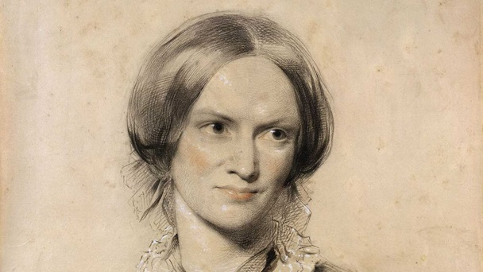
Brontë was born on April 21, 1816, in Thornton, Yorkshire, England.
Said to be the most dominant and ambitious of the Brontës, Charlotte
was raised in a strict Anglican home by her clergyman father and a
religious aunt after her mother and two eldest siblings died. She
and her sister Emily attended the Clergy Daughter's School at Cowan
Bridge but were largely educated at home. Though she tried to earn a
living as both a governess and a teacher, Brontë missed her sisters
and eventually returned home.
A writer all her life, Brontë published her first novel, Jane Eyre,
in 1847 under the manly pseudonym Currer Bell. Though controversial
in its criticism of society's treatment of impoverished women, the
book was an immediate hit. She followed the success with Shirley in
1848 and Villette in 1853.
Works of Charlotte Bronte
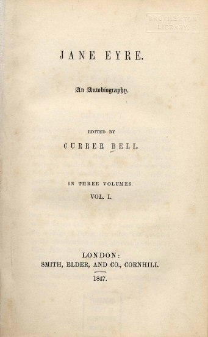
Jane Eyre-- novel by Charlotte Brontë, first
published in 1847 as Jane Eyre: An Autobiography, with Currer Bell
(Brontë’s pseudonym) listed as the editor. Widely considered a
classic, it gave new truthfulness to the Victorian novel with its
realistic portrayal of the inner life of a woman, noting her
struggles with her natural desires and social condition.
Written as a first-person narrative, the novel follows the plain but
intelligent Jane Eyre in her development as an individual from her
traumatic childhood. Brontë describes five specific stages of Jane's
growth over the course of the novel: first, her childhood among
oppressive relatives; second, her time as a student at Lowood
School; third, her months as a governess at Thornfield Manor;
fourth, her time with her cousins at Marsh's End; and finally, her
return to Thornfield Manor and marriage to Mr. Rochester. As a
classic example of the Germanic Bildungsroman, or novel of
formation, the text demonstrates Jane's attempts to define her
identity against forces of opposition in each of these five stages.
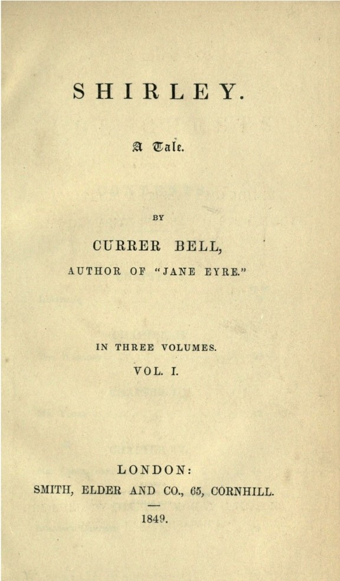
Shirley-- is a classic historical novel by
Charlotte Brontë. Written in 1849 after the overwhelming success of
Jane Eyre, the book follows two women from very different social
circles who show their communities what women are capable of. The
book is generally regarded as Brontë’s most feminist novel, and it
is still widely read today. Her biographer called it a
“revolutionary” text. Charlotte Brontë was the eldest of the famous
Brontë sisters, whose novels are among the highest-regarded in
English literature. She was not in good health and died at only
thirty-eight while carrying her unborn child.
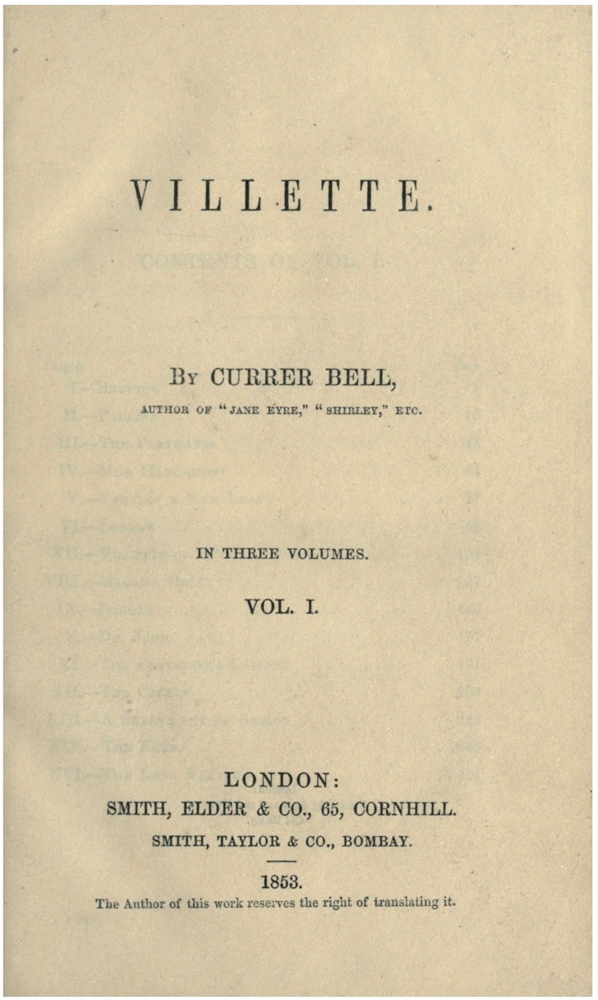
Villette-- Kate Millet, author of Sexual Politics,
wrote of Villette that it was "too subversive to be popular." Mrs.
Gaskell, Charlotte Brontë's friend and her first biographer, said
that the story of Villette was not as interesting as that of Jane
Eyre. The book is not as often read as Jane Eyre, and many readers,
even those who admire Brontë, have no idea she wrote more than one
novel. Villette often languishes unread on library shelves, attended
to only by graduate students or literary scholars.